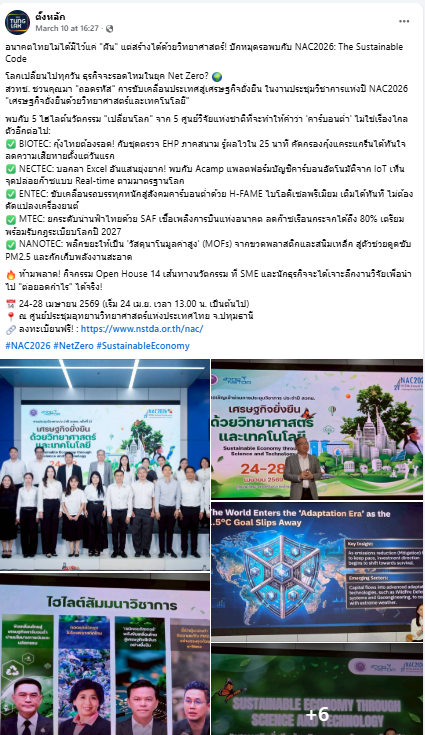

อัปเดตล่าสุด:
🔗 รายการลิงก์ข่าวประชาสัมพันธ์:
🖼️ ภาพสรุปกิจกรรม (คลิกเพื่อดูรูปใหญ่)

| โครงการ | เรื่อง | สถานะ | วันที่ |
|---|---|---|---|
| Tech Now | ตอน 1 — PM 2.5 สวทช. ช่วยอะไรได้บ้าง แนะนำเทคโนโลยี | เผยแพร่แล้ว | 11/3/2026 |
| Tech Now | ตอน 2 — Low Carbon และ Carbon Neutrality (Product) | ปรับแก้คอนเทนต์และกราฟิก | — |
| Tech Now | ตอน 3 — Low Carbon และ Carbon Neutrality (Non-Product) | เตรียมข้อมูลสำหรับเขียนคอนเทนต์ | — |
| Tech Now | ตอน 4 — สุขภาพ | ยังไม่ดำเนินการ | — |
| Tech Now | ตอน 5 — สัตว์เลี้ยง | ยังไม่ดำเนินการ | — |
| Influvation | ตอน 1.1 — Low Carbon งาน NAC2026 (วันแถลงข่าว) | โพสต์แคปชัน+ภาพแล้ว | 10/3/2026 |
| Influvation | ตอน 1.2 — Low Carbon งาน NAC2026 (วันงาน) | รอเสนอแผน | — |
| Influvation | ตอน 2 — Adaptive Education Platform (มิถุนายน) | เสนอรูปแบบ comp day | มิ.ย. 2026 |
| Influvation | ตอน 3 — นวัตกรรมเกษตร 4 ภาค | เสนอให้ KOL เลือก | — |